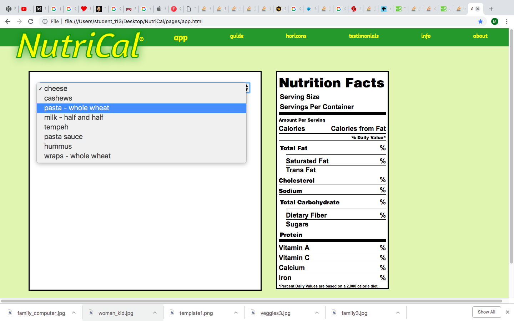

Adding Ingredients
Click on the select menu and add ingredients one at a time. You will see the nutrition label populate for each ingredient.
Adjusting Values
Click on the amount box or the measurent dropdown to change the amount for each ingredient. You will see the values adjust in the nutrition label box automatically.

Calculate Recipe
Click the make recipe button and the nutrition label will populate with an average of all the values. You now have a new label for you recipe.